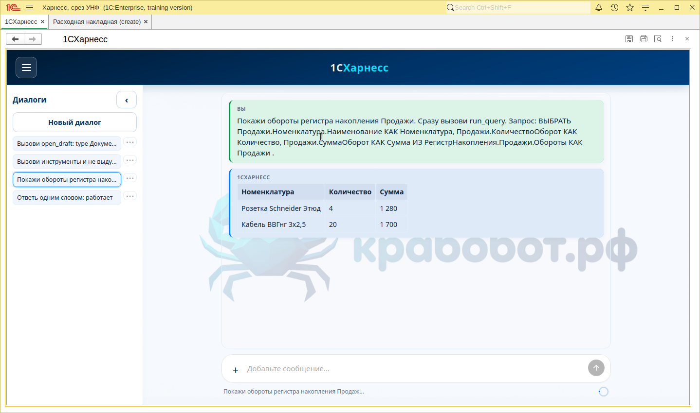
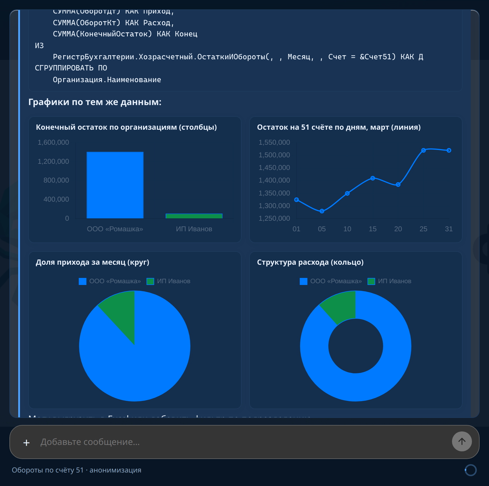
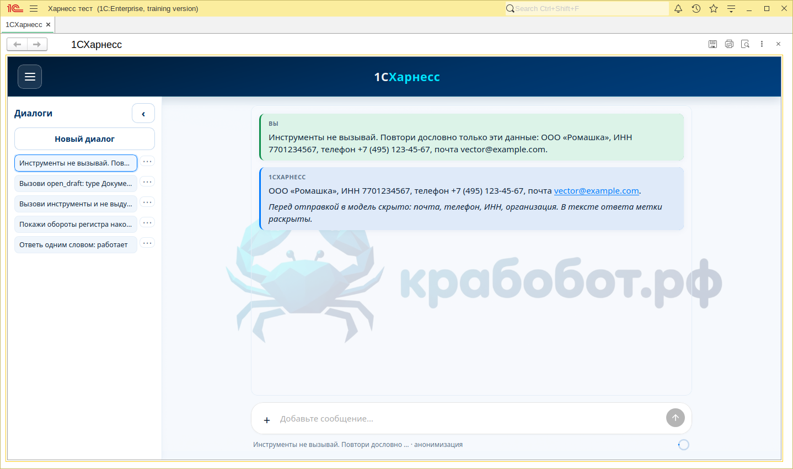
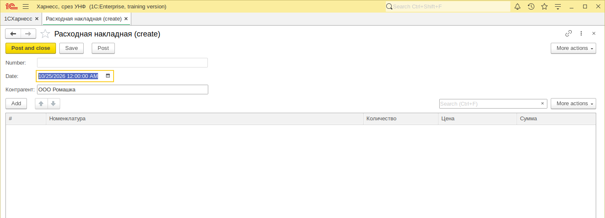
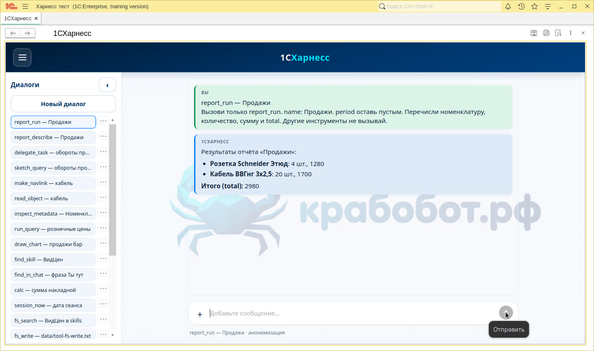

«Я построю свой 1С-харнесс с куртизанками и посьянсом»: как я посадил LLM прямо в сеанс 1С
Чат во внешней обработке, модель ходит в облако напрямую, а инструменты выполняются в вашем сеансе — без выдуманных цифр из головы нейросети.
Бендер, будь он неладен: «Ладно. Я построю свой 1С-харнесс. С куртизанками и посьянсом!»
Посьянсов в релизе пока нет. Зато есть рабочий чат, запросы к базе и кнопка «Открыть в 1С».
Зачем это вообще
Я устал от сценария «скопируйте ТЗ в ChatGPT и надеетесь, что он угадает структуру вашей УНФ». Модель не знает, есть ли у вас РегистрНакопления.Запасы или только учебный срез. Она придумает — и будет уверена.
Нужен был агент внутри платформы: живые выборки, навигация в родном окне 1С, настройки в workspace рядом с агентами и навыками. Отсюда 1CHarness — .epf с HTML-чатом и мостом tool.invoke в BSL.
Что получилось
| Слой | Роль |
|---|---|
index.html | UI, Chart.js, XHR к LLM |
| DOM-мост | tool.invoke ↔ сервер формы |
workspace/ | config, агенты, сессии, data/map.md |
| Инструменты | Запросы, объекты, отчёты, черновики |
Пользователь → чат (HTML)
↓ ↗ LLM API
tool.invoke ──► BSL формы ──► база сеанса
↑
tool.result (JSON)
Почему так и в чём выигрыш
- Сеанс — источник правды.
explore_dataи картаdata/map.mdне заставляют модель гадать имена регистров. - Один EPF. Сборка из git, без отдельного чат-сервера на каждого пользователя.
- Инструменты, не магия промпта. JSON-контракт для ссылок, запросов, файлов.
- Жизнь в 1С.
e1cib, черновики,report_composeс пресетом. - Честные границы. Учебная каркасная УНФ может не открыть универсальный отчёт — лучше ошибка в чате, чем зависание.
Инструкция
- Клон: github.com/andretisch/1CHarness
bash scripts/build-epf.sh— пересобрать EPF- Открыть
epf/1CHarness.epf, настроить API в чате - Для UI без 1С:
python3 scripts/harness_dev.py
git clone https://github.com/andretisch/1CHarness.git
cd 1CHarness
bash scripts/build-epf.shСкриншоты


draw_chart в пузыре ассистента.


open_draft — форма без записи.
report_run в тестовом срезе.Хроника разработки
BOM в макет → мост на форме → синхрон сессий с диском → read_object и e1cib → универсальный report_compose. Подробности — в git log main.
Итог
Не «ещё один чат», а харнесс: рамка, где LLM обязан дотрагиваться до реальной базы. Грубовато, зато честно — и расширяется одним EPF.